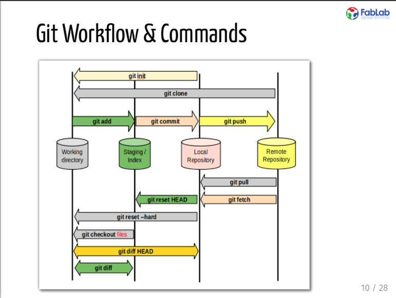

Website Development
In here i will be talking about how i developed my website.
Why develop a website?
The main reason why? It is for documentation. This website allows me to track what i have done prior to competing my main project. It allows me to imput then archive my accomplishments and mistakes in my jurney through Digital Fabrication for others to learn from me.
HTML Basics
What is HTML? It stands for Hyper Text Markup Language, it is the standard markup language for creating Web pages and it consists of a series of elements to describe the structure of a web page.Elements in the HTML tell the browser how to display the contents.
Things i learned:
<1>With the things i have learned, i started on my first attempt at my website :
| Sample about me page | First attempt at a webpage |
Basic CSS
CSS stands for Cascading Style Sheets,it describes how HTML elements are to be displayed on screen, paper, or in other media. CSS saves a lot of work by controling the layout of multiple web pages all at once.
Things i have learned:
CSS helped me edit my webpage to make it look neater
| Sample home page | First attempt at my homepage with navbar from CSS |
Github
Github is a provider for internet hosting for software development, it uses Git plus its own features to offer basic services free of charge.A website and cloud-based service that allows developers to store and manage their code, as well as track changes to their code it also allows you to host public accessible static web-pages.
Steps i took to publish my website:
- Create an account
- Create a repository
- Code the website
- Add the files into the repository
- Host the website with GitHub
- Acquire link and access the website
The GitHub desktop app which i downloaded shortly helps me push edits that i have made into my repository, enabling me to edit my website. It is also able to help me rollback mysite when i dont like the edits that i have done to my site.